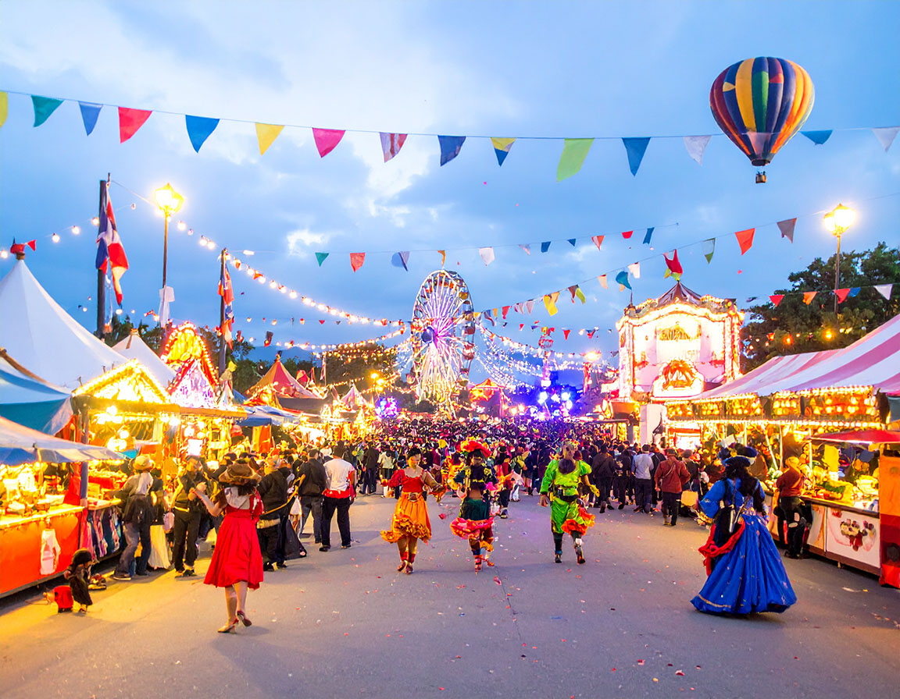
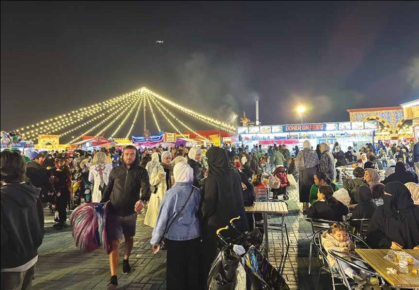
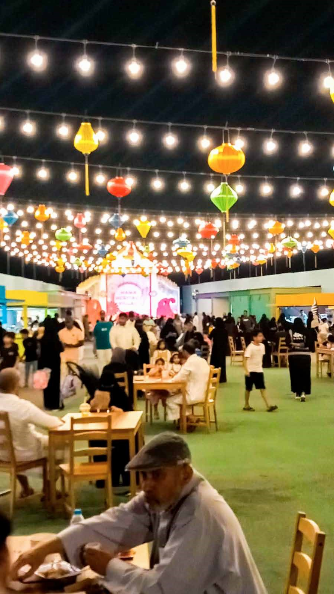

نظرة عامة على المشروع
تجربة كرنفال شاملة تضم واجهات ومتاجر وأجنحة وأكشاك من جميع أنحاء العالم
أجواء الكرنفال
اختبر الأجواء الاحتفالية والتنوع الثقافي الذي ينتظرك

أجواء احتفالية
احتفالات نابضة بالحياة وعروض ثقافية

تنوع ثقافي
تمثيل لثقافات من جميع أنحاء العالم

ترفيه مباشر
عروض ديناميكية وعروض ثقافية
الكرنفال العالمي جدة: عالم من الاحتمالات
يمثل الكرنفال العالمي جدة نهجاً ثورياً في السياحة والترفيه الثقافي، مما يخلق بيئة غامرة حيث يمكن للزوار تجربة أكثر ثقافات العالم حيوية وتقاليده ونكهاته في وجهة استثنائية واحدة. يتجاوز هذا المشروع الطموح الحدائق الترفيهية التقليدية أو المراكز الثقافية - إنه احتفال حي ومتنفس بالتنوع العالمي.
تم تصميم مفهوم الكرنفال لدينا على مبدأ التمثيل الثقافي الأصيل. كل منطقة وبلد وثقافة ممثلة في كرنفالنا يتم عرضها من خلال واجهات مصممة بعناية تحاكي الأنماط المعمارية الأيقونية، وأجنحة أصلية تعرض الحرف والمنتجات التقليدية، وأجنحة ثقافية تروي قصص المجتمعات المختلفة، وأكشاك تفاعلية تقدم تجارب عملية.
يشمل المشروع ست مناطق ثقافية متميزة: الهند وباكستان، تركيا والمغرب، شرق آسيا (الصين واليابان وكوريا)، دول الخليج، مصر، وأفريقيا. تم تصميم كل منطقة لتوفير تجربة أصيلة للزوار تتجاوز التمثيل السطحي، وتقدم انغماساً ثقافياً عميقاً من خلال الطعام والموسيقى والفن والحرف اليدوية والتجارب التفاعلية.
ما يميز الكرنفال العالمي جدة هو التزامنا بالأصالة الثقافية. نحن نعمل مباشرة مع سفراء الثقافة والحرفيين والخبراء من كل منطقة لضمان أن كل جانب من جوانب الكرنفال - من الهندسة المعمارية والديكور إلى الطعام والترفيه - يمثل بدقة التراث الغني والتقاليد لهذه الثقافات المتنوعة.
أبرز معالم المشروع
اكتشف العناصر الأساسية التي تجعل الكرنفال العالمي جدة وجهة ثقافية فريدة
الأصالة الثقافية
يتم تمثيل كل منطقة بشكل أصيل من خلال التعاون المباشر مع الخبراء الثقافيين والحرفيين.
تجارب تفاعلية
يتفاعل الزوار مباشرة مع التقاليد الثقافية من خلال الأنشطة العملية والعروض التوضيحية.
ترفيه عالمي المستوى
عروض حية وعروض ثقافية وترفيه من جميع أنحاء العالم.
بنية تحتية حديثة
مرافق على أحدث طراز مصممة للراحة وإمكانية الوصول والاستدامة.
موقع استراتيجي
يقع في جدة، مدينة البوابة التي يمكن للزوار من قارات متعددة الوصول إليها.
موسم طويل
موسم كرنفال لمدة سبعة أشهر من سبتمبر ٢٠٢٥ إلى أبريل ٢٠٢٦.